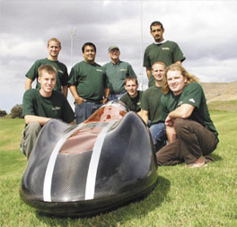

Sample Column Layout
3-Column Layout
Top Stories of 2009
Dude! Cal Poly Ranks as No. 3 'Surf School' in the Nation
Cal Poly ranked No. 3 in the nation in the 2009 'Top 10 Surf Schools' ranking by Surfline.com.
Orfalea Business College Breaks into Top Tier
The Orfalea College of Business at Cal Poly is one of only two public universities in California to rank in the Top 100 undergraduate business programs in the nation, according to a recent ranking by Business Week magazine.
Cal Poly Grown
Cal Poly Organic Farm
 Cal Poly's learn-by-doing tradition means that the university's College of Agriculture produces a variety of campus-grown or campus-made food, flowers, plants and more that are for sale throughout the year to both the campus community and the general public.
Cal Poly's learn-by-doing tradition means that the university's College of Agriculture produces a variety of campus-grown or campus-made food, flowers, plants and more that are for sale throughout the year to both the campus community and the general public.
Some are produced as part of hands-on lessons in college classes. Others are 'Enterprise Projects,' in which the university provides money or resources, students provide labor in design, production, packaging and marketing under the supervision of faculty. Net proceeds from Enterprise Projects go to pay the students involved and can be re-invested in the project.
For Media
Entertainment Links
Split Layout
Environmental Management & Protection
The major will provide students with the science and management background in natural resources that, when properly integrated, can guide consumptive uses of resources in a sustainable manner.
Recreation, Parks, & Tourism Administration
Our program is one of only 24 nationally accredited programs on campus. It is an interdisciplinary degree program with a mission to provide a dynamic learning environment dedicated to the development of effective leadership and the advancement of knowledge to benefit individuals, communities, and society.
1, 2-3 Column Layout
Orfalea Business College Breaks into Top Tier
The Orfalea College of Business at Cal Poly is one of only two public universities in California to rank in the Top 100 undergraduate business programs in the nation, according to a recent ranking by Business Week magazine.
Black Widow Supermileage Racer Takes Silver
SAN LUIS OBISPO -- Students from Cal Poly's College of Engineering are tuning up the 'Black Widow' supermileage racecar and looking for another first-place win.
Cal Poly will enter its vehicle, the Black Widow, to compete against 51 other high school and university teams from around the world in the 2009 Shell Eco-marathon Americas. This year’s supermileage challenge event takes place at Auto Club Speedway in Fontana.
In 2008, with a whopping 2,752.3 miles per gallon, Cal Poly’s ‘Supermileage’ car finished second place in the competition. In 2007, Cal Poly's "Black Widow" took first place with an impressive 1,902.7 mpg.
1-2, 3 Column Layout
Forestry & Natural Resources
 Prepares students for careers in the protection and management of our forest and natural resources.
Prepares students for careers in the protection and management of our forest and natural resources.
Graduates qualify for such positions as forester, environmental interpreter, natural resource manager, urban forester, park administrator, park ranger, resource planner, watershed manager, hydrologist, fire and fuels manager, and many other related environmental career areas.
3-Column Layout with Columns Based Splash Images
Quicklinks
Cal Poly Grown & Cal Poly Made
The university's learn-by-doing tradition means that the university's College of Agriculture produces a variety of campus-grown or campus-made food, flowers, plants and more that are for sale throughout the year to both the campus community and the general public. Some are produced as part of hands-on lessons in college classes. Others are 'Enterprise Projects,' in which the university provides money or resources, students provide labor in design, production, packaging and marketing under the supervision of faculty.
1, 2-3 Column Layout with Columns-Splash Images
Orfalea Business College Breaks into Top Tier
The Orfalea College of Business at Cal Poly is one of only two public universities in California to rank in the Top 100 undergraduate business programs in the nation, according to a recent ranking by Business Week magazine.
Top Ranking for Architecture
Cal Poly’s Architecture Department ranked third among undergraduate programs in the annual DesignIntelligence survey.
Recreation, Parks, & Tourism Administration
Our program is one of only 24 nationally accredited programs on campus. It is an interdisciplinary degree program with a mission to provide a dynamic learning environment dedicated to the development of effective leadership and the advancement of knowledge to benefit individuals, communities, and society.
The curriculum focus is on the development of appreciation, knowledge, understanding, and skills in leadership, planning, and administration of park, recreation and tourism programs and services.
Cal Poly is a Winner in Energy Efficiency
Cal Poly will receive two best practice awards and an honorable mention for energy efficiency in June at the California Higher Education Sustainability Conference. The three awards are the most of any CSU awarded.
The university received top honors for its Student Sustainability Program called Green Campus and HVAC Design/Retrofit on the Recreation Center renovation, and honorable mention for Lighting Design/Retrofit for the Recreation Center renovation.
“We wouldn’t have won these awards had it not been for the ongoing efforts of our students, faculty and staff to continue to make Cal Poly more environmentally sustainable,” said Dennis Elliot, assistant director of energy, utilities and sustainability at Cal Poly.
The awards are given as part of the 2010 Best Practice Awards competition for the Energy Efficiency Partnership Program. The partnership includes the University of California, the California State University and the California Community Colleges.
1-2, 3 Column Layout with Columns-Splash Images
President Baker: 106,000 Diplomas in 31 Years
After handing out more than 106,000 diplomas over 31 years, Cal Poly President Warren Baker is bidding farewell to Cal Poly. Saturday’s commencement ceremonies were his last before his retirement is official this summer.
The university has grown substantially since President Baker first stepped foot on campus in 1979, with nearly $1 billion in new buildings and facilities improvements made and 20 new majors and 15 master’s degrees introduced.
But as he has said before, “The real measure of Cal Poly is our collective ability to transform academically motivated students into resourceful professionals and innovative leaders.”
Since his first commencement ceremony three decades ago, the university’s enrollment has jumped from 14,684 in fall quarter 1979 to 19,325 for the current academic year.
Institutes & School Forest
3-Column Layout with Spanning Columns Based Splash Image
Quicklinks
Cal Poly Grown & Cal Poly Made
The university's learn-by-doing tradition means that the university's College of Agriculture produces a variety of campus-grown or campus-made food, flowers, plants and more that are for sale throughout the year to both the campus community and the general public. Some are produced as part of hands-on lessons in college classes. Others are 'Enterprise Projects,' in which the university provides money or resources, students provide labor in design, production, packaging and marketing under the supervision of faculty.